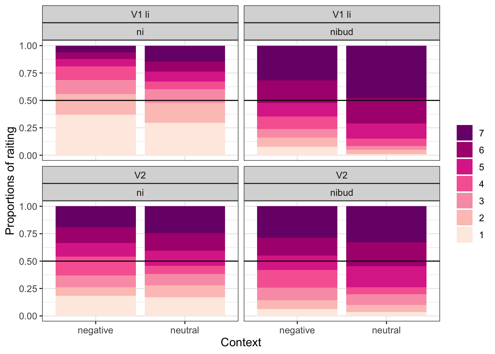
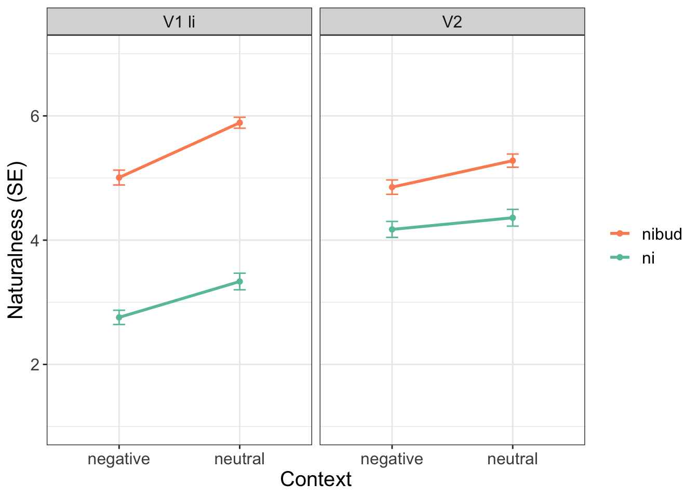
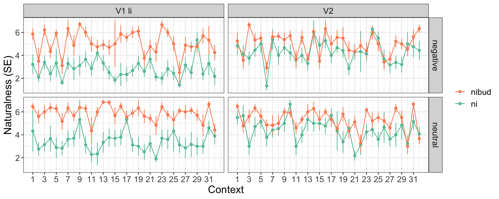

library(tidyverse) # THE package, it contains ggplot2, tidyr, dplyr, readr and more
library(formattable) # for pretty markdown tables
library(here) # sets the dir R Notebook for naturalness/acceptability judgment experiments
Info
Hi! This R notebook describes the steps that are required for the analysis of naturalness/acceptability judgment linguistic experiments. I use the experiment that I did with Radek Šimík testing Russian negated polar questions in different contexts as the example data (see Onoeva and Šimík 2023). The experiment was run on LRex, so your raw data can be different if you use a different platform. We had several sub-experiments, here I report on one because code is the same for all of them.
Design
Files
The csv file with raw results is available in this repo (perhaps I can also load a spreadsheet with all conditions that I used for LRex?). There are also two files with the script – rmd and md. The first one is a raw RMarkdown script from RStudio, the second one is a pretty version for GitHub, which is easier to follow online.
Loading data
Here I’m setting the working directory and loading data.
There is an option to download a version without abandoned trials from LRex and I load it here. Then I remove the unnecessary example items.
# standard way of setting the directory locally on your machine
setwd("/Users/maria.onoeva/Desktop/new_folder/GitHub/stat-repo/R_script_new")
# loading all data
all_df <-
read_delim("queslav_neg_mo_RESULTS_2023-03-06-0953_noaband.csv", ";",
escape_double = FALSE,
trim_ws = TRUE,
show_col_types = FALSE)# since I load it online, it's more convenient to do it via "here" package
# loading all data
all_df <-
read_delim(here("R_script_new", # showing path to the folder with the file
"queslav_neg_mo_RESULTS_2023-03-06-0953_noaband.csv"), ";")
# removing example items
main_df <- all_df %>%
filter(materials != "1_examples")
# I thank Masha Razguliaeva for the tip!Fillers and unreliable participants
You can see the number of participants on LRex but just to double-check it I’ll run a couple of lines here as well.
# counts all participants
main_df %>%
distinct(participant) %>%
summarize(total_part = n())# A tibble: 1 × 1
total_part
<int>
1 95# summarizes items for all participants
main_df %>%
group_by(participant) %>%
summarize(items = n())# A tibble: 95 × 2
participant items
<dbl> <int>
1 1 82
2 2 82
3 3 82
4 4 82
5 5 82
6 6 82
7 7 82
8 8 82
9 9 82
10 10 82
# ℹ 85 more rowsThe next step is to extract all filler items. These items are used to test reliability of the participants. Here I have 10 such items, people had to assess 3 items as ‘bad’ or 1-4 and the rest as ‘good’ 5-7.
# creating a new df with the filler items only
fillers_only <- main_df %>%
filter(materials == "f9_filler")
# creating a new column for checking if fillers are good or not
fillers_only$filler_answer <- 0
fillers_only$filler_answer <- as.numeric(fillers_only$filler_answer)
# rename filler items: the first three items were bad, the rest were good
# this step can be skipped but it's easier for me to check and manipulate the results with it
fillers_only$condition[fillers_only$item %in% c("1", "2", "3")] <- 'bad'
fillers_only$condition[fillers_only$condition != "bad"] <- 'good'Now I’m assigning ‘1’ to filler_answer column if these filler items were assessed correctly. In other words, if bad fillers have 1-4 and good 5-7. If these conditions are not met, the value remains ‘0’.
# bad fillers
fillers_only$filler_answer[which(grepl('bad', fillers_only$condition) &
grepl('1|2|3', fillers_only$rating1))] <- 1
# good fillers
fillers_only$filler_answer[which(grepl('good', fillers_only$condition) &
grepl('5|6|7', fillers_only$rating1))] <- 1So now I have the column which tells me how each participant assessed each filler item. I can measure their reliability simply by counting how good they were in the fillers. In the table below, the first participant has mean ‘1’, so they have assessed all fillers correctly as I expected them. If mean is lower than 80 %, a participant is unreliable.
filler_results <- fillers_only %>%
group_by(participant) %>%
summarize(Mean = mean(filler_answer, na.rm=TRUE))
filler_results# A tibble: 95 × 2
participant Mean
<dbl> <dbl>
1 1 1
2 2 0.9
3 3 0.8
4 4 0.6
5 5 0.6
6 6 0.6
7 7 0.9
8 8 0.7
9 9 0.9
10 10 0.9
# ℹ 85 more rows# how in general the participants went through fillers
mean(filler_results$Mean)[1] 0.844Now I need to find unreliable participants. This is done quickly, just to find the people who have means lower than 0.8. This is quite a high threshold but 68 participants is still fine.
unreliable_participants <- filler_results %>%
filter(Mean < 0.8) # I have 27 unreliable participantsThen I remove unreliable participants from reliable ones.
fillers_only_reliable <- anti_join(filler_results, unreliable_participants,
by = "participant")
mean(fillers_only_reliable$Mean) # testing by applying mean to the reliable df[1] 0.924Data sets
In this experiment, we had one big experiment and several smaller, see summary of the materials column. I’m going to separate them into several data frames. But first, it’s necessary to remove the filler items and unreliable participants.
main_df %>%
group_by(materials) %>%
summarise()# A tibble: 10 × 1
materials
<chr>
1 e1_main
2 f1_nibud
3 f2_razve_pos
4 f3_razve_neg
5 f4_slucajno_neg
6 f5_slucajno_pos
7 f6_ctoli_neg
8 f7_ctoli_pos
9 f8_repetitive
10 f9_filler main_df1 <- main_df %>%
filter(materials != "f9_filler")
main_df1 %>%
group_by(materials) %>%
summarise() # no filler in the summary # A tibble: 9 × 1
materials
<chr>
1 e1_main
2 f1_nibud
3 f2_razve_pos
4 f3_razve_neg
5 f4_slucajno_neg
6 f5_slucajno_pos
7 f6_ctoli_neg
8 f7_ctoli_pos
9 f8_repetitive Removing unreliable participants and checking the number.
main_df2 <- anti_join(main_df1, unreliable_participants,
by = "participant")
main_df2 %>%
distinct(participant) %>%
summarize(total_part = n())# A tibble: 1 × 1
total_part
<int>
1 68Now I need to create a separate df for each materials set, they are stored in split_main_df1. It can be done using filter() but I try here group_split(). I can access each group later.
split_main_df1 <- main_df2 %>% group_split(materials)Descriptive stat
The design for this experiment was 2 x 2 x 2.
| verb | context | indefinite |
|---|---|---|
| V1 li | neutral | ni |
| V2 | negative | nibud |
The conditions were coded as letters in the spreadsheet for LRex, so first, I assign new comprehensible conditions, so it’s easier to read the results. Not sure if it can be done in a more sophisticated way (ChatGPT says otherwise :unamused: :expressionless:).
# accessing the first experiment from the groups
e1_df <- split_main_df1[[1]]
# creating a new column for the first variable 'verb' and recoding to the readable form
# 4 conditions were V1 li, 4 -- V2
e1_df$verb <- 0
e1_df$verb[e1_df$condition %in% c("a", "c", "e", "g")] <- "V1 li"
e1_df$verb[e1_df$verb != "V1 li"] <- "V2"
# the same as above for the second variable 'context'
e1_df$context <- 0
e1_df$context[e1_df$condition %in% c("a", "b", "c", "d")] <- "neutral"
e1_df$context[e1_df$context != "neutral"] <- "negative"
# the same as above for the third variable 'indefinite'
e1_df$indef <- 0
e1_df$indef[e1_df$condition %in% c("a", "b", "e", "f")] <- "ni"
e1_df$indef[e1_df$indef != "ni"] <- "nibud"
# ChatGPT version: idk case_when function
# e1_df <- e1_df %>%
# mutate(
# indef = case_when(
# condition %in% c("a", "b", "e", "f") ~ "ni",
# TRUE ~ "nibud"
# )
# )There are two ways how to look at my data: check how they are similar and how they are different. For the first, I need measures of central tendency – mode, mean, median, for the second variability values – range, variance, standard deviation.
# creating one mega condition, not necessary though, group_by() works just fine
# e1_df <- e1_df %>%
# mutate(condition1 = paste(context, verb, indef))
library(DescTools) # for Mode()
formattable(e1_df %>%
group_by(indef, verb, context) %>%
summarize(Mode = Mode(rating1),
Median = median(rating1),
Mean = mean(rating1),
Range = paste(range(rating1), collapse = "-"),
Variance = var(rating1),
SD = sd(rating1)), # sd = sqrt(var(rating1))
align = "c")| indef | verb | context | Mode | Median | Mean | Range | Variance | SD |
|---|---|---|---|---|---|---|---|---|
| ni | V1 li | negative | 1 | 2 | 2.76 | 1-7 | 3.56 | 1.89 |
| ni | V1 li | neutral | 1 | 3 | 3.33 | 1-7 | 4.85 | 2.20 |
| ni | V2 | negative | 7 | 4 | 4.17 | 1-7 | 4.48 | 2.12 |
| ni | V2 | neutral | 7 | 5 | 4.36 | 1-7 | 4.93 | 2.22 |
| nibud | V1 li | negative | 7 | 6 | 5.01 | 1-7 | 3.90 | 1.98 |
| nibud | V1 li | neutral | 7 | 6 | 5.89 | 1-7 | 2.10 | 1.45 |
| nibud | V2 | negative | 7 | 5 | 4.85 | 1-7 | 3.65 | 1.91 |
| nibud | V2 | neutral | 7 | 6 | 5.28 | 1-7 | 3.07 | 1.75 |
- Mode is the most popular
dudenumber in the set. It’s usually not a very useful value but here why not :grin: - Median is a true central tendency value as it’s in the middle but it’s necessary to order the values first. It’s resilient to outliers which can be good and bad at the same time.
- Mean is also known as average. It’s like a parent that loves their kids equally, or ideal socialism, it shows the sum of all values divided by their number, so if everybody should get the same, they get mean.
- Range is min and max values, not super telling here but can be useful with different data.
- For variance mean is required. To calculate that one, each observed value has to be compared to the mean, then this difference must be squared (because it can be negative), after the sum of all of these squared differences should be divided by the number of observed values (I’m aware about n and n-1 stuff, but there is no space for that). So it’s average for squared differences from the mean. It’s possible to do from median, I guess, but here it’s calculated from mean.
- Standard deviation (SD) is the easiest, it’s a square root from variance. Since differences from the mean were squared in the previous step, one needs to ‘unsquare’ that result. Perhaps my SDs are too high in some cases but this is what I’m going to investigate in my dissertation (Masha Razguliaeva’s comment: for naturalness judgments SD might be higher than for grammaticality).
Stacked bar plot
The next step is to plot the results. Before I do that I need to refactor and relevel ratings, so they are displayed properly (not upside-down).
# have to make as factor, otherwise error
e1_df$rating1 <- as.factor(e1_df$rating1)
# re-leveling ratings (I have this code from Anička Staňková)
e1_df_relevel <- e1_df %>%
mutate(rating1 = fct_relevel(rating1,"7","6","5","4","3","2","1"))
# re-leveling verbs so they are showed differently in the plot
e1_df_relevel1 <- e1_df_relevel %>%
mutate(verb = fct_relevel(verb,"V1 li", "V2"))On the x axis, there are contexts, on the y axis – proportions of ratings. The darkness of the bars indicates naturalness (dark means more natural). The black line that strikes through the plots is median.
I have commented out some lines for the plot but they are mostly cosmetics that change size of text, etc. These might be useful for specific cases but here I don’t need them.
e1_main_plot <- ggplot(e1_df_relevel1, aes(fill=rating1, x=context)) +
geom_bar(position = "fill") +
geom_hline(aes(yintercept=0.5), size=0.5) +
facet_wrap(~verb+indef) +
# coloring
theme_bw() +
scale_fill_brewer(palette = "RdPu", direction=-1) +
theme(legend.position = "right",
text = element_text(size = 12),
# legend.text = element_text(size=20),
# legend.key.size = unit(1, 'cm'),
legend.title = element_blank())+
# axis.text = element_text(size = 25),
# axis.title = element_text(size = 25),
# axis.title.y = element_text(margin = margin(t = 0, r = 20, b = 0, l = 0)),
# axis.title.x = element_text(margin = margin(t = 20, r = 0, b = 0, l = 0))) +
# ggtitle("Stacked bar plot E1 (68 participants)") +
xlab("Context") +
ylab("Proportions of raiting")
e1_main_plot
It is also possible to save the plots using this code:
ggsave(e1_main_plot, file="e1_main1.eps",
width = 35, height = 37, units = "cm", device="eps")
ggsave(e1_main_plot, file="e1_main1_pdf.pdf",
width = 20, height = 20, units = "cm", device="pdf")Interaction plot
The next step is to create an interaction plot. First, I do the calculations and then plot the results.
:exclamation: I use here the results before re-leveling.
# This code is based on Radek Šimík's code.
library(Rmisc) # for summarySE
# I load the df to inter_df
inter_df <- e1_df
# changing rating1 to numeric
inter_df$rating1 <- as.numeric(inter_df$rating1)
# calculating interactions
tab_inter <- summarySE(inter_df, measurevar="rating1",
groupvars = c("context", "verb", "indef"))The plot code might look crazy, but I’ve commented things out and most of the lines are cosmetics.
# plotting
inter_plot <- ggplot(tab_inter, aes(x=context, y=rating1, colour=indef, group=indef)) +
geom_errorbar(aes(ymin=rating1-se, ymax=rating1+se), width=.1) +
facet_wrap(~verb) +
theme_bw() +
geom_line(size = 1) +
theme(
text = element_text(size = 15),
# legend.text = element_text(size=30),
# legend.key.size = unit(1, 'cm'),
legend.title=element_blank())+
# legend.position = c(0.8, 0.15),
# axis.text = element_text(size = 25),
# axis.title = element_text(size = 25),
# axis.title.y = element_text(margin = margin(t = 0, r = 20, b = 0, l = 0)),
# axis.title.x = element_text(margin = margin(t = 20, r = 0, b = 0, l = 0))) +
geom_point() +
xlab("Context") +
ylab("Naturalness (SE)") +
coord_cartesian(ylim = c(1, 7)) +
#scale_y_continuous(breaks = pretty_breaks(4)) +
guides(colour = guide_legend(reverse=TRUE)) +
scale_color_brewer(palette = "Set2")
inter_plot
The same plot as above but for each item. (Perhaps I can use conditions as color?)
tab_inter_items <- summarySE(inter_df, measurevar="rating1",
groupvars = c("item", "context", "verb", "indef"))
# plotting
inter_plot_items <- ggplot(tab_inter_items, aes(x=item, y=rating1, colour=indef, group=indef)) +
geom_errorbar(aes(ymin=rating1-se, ymax=rating1+se), width=.1) +
#facet_wrap(~verb+context) +
facet_grid(vars(verb), rows = vars(context)) +
theme_bw() +
geom_line() +
theme(
text = element_text(size = 15),
# legend.text = element_text(size=30),
# legend.key.size = unit(1, 'cm'),
legend.title=element_blank())+
# legend.position = c(0.8, 0.15),
# axis.text = element_text(size = 25),
# axis.title = element_text(size = 25),
# axis.title.y = element_text(margin = margin(t = 0, r = 20, b = 0, l = 0)),
# axis.title.x = element_text(margin = margin(t = 20, r = 0, b = 0, l = 0))) +
geom_point() +
xlab("Context") +
ylab("Naturalness (SE)") +
coord_cartesian(ylim = c(1, 7)) +
#scale_y_continuous(breaks = pretty_breaks(4)) +
guides(colour = guide_legend(reverse=TRUE)) +
scale_color_brewer(palette = "Set2") +
scale_x_continuous(breaks=seq(1, 32, by = 2))
inter_plot_items
Geom_smooth plot for all items in all conditions
e1_df$rating1 <- as.numeric(e1_df$rating1)
all_summary %>%
group_by(item, indef, verb, context) %>%
summarize(Median = median(rating1),
Mean = mean(rating1),
Variance = var(rating1),
SD = sd(rating1)) # sd = sqrt(var(rating1))
# sd_plot <- ggplot(all_summary) +
# geom_point(aes(x=item, y=Mean, color = indef)) +
# facet_grid(vars(verb), rows = vars(context)) +
# theme(legend.title=element_blank()) +
# theme_bw() +
# guides(colour = guide_legend(reverse=TRUE)) +
# scale_color_brewer(palette = "Set2")
#
# sd_plotInferential stat
I’ll come back with description :v: :sparkles: Drawing inferences about population (all Russian speakers) from sample (68 people). Sampling strategy – convenience sampling.
library(modelsummary)
library(lmerTest)
library(ordinal)
library(gtsummary)
stat_E1 <- clmm(rating1 ~ verb * indef * context +
(1 | participant) + (1 | item),
contrasts = list(verb="contr.sum",indef="contr.sum", context="contr.sum"),
data=e1_df)
summary(stat_E1)Cumulative Link Mixed Model fitted with the Laplace approximation
formula: rating1 ~ verb * indef * context + (1 | participant) + (1 | item)
data: e1_df
link threshold nobs logLik AIC niter max.grad cond.H
logit flexible 2176 -3681.28 7392.57 2723(10896) 1.71e-03 2.8e+02
Random effects:
Groups Name Variance Std.Dev.
participant (Intercept) 0.940 0.970
item (Intercept) 0.258 0.508
Number of groups: participant 68, item 32
Coefficients:
Estimate Std. Error z value Pr(>|z|)
verb1 -0.1795 0.0397 -4.53 6.0e-06 ***
indef1 -0.8142 0.0423 -19.26 < 2e-16 ***
context1 -0.2440 0.0401 -6.09 1.1e-09 ***
verb1:indef1 -0.4060 0.0404 -10.05 < 2e-16 ***
verb1:context1 -0.1130 0.0396 -2.85 0.0043 **
indef1:context1 0.0674 0.0398 1.69 0.0905 .
verb1:indef1:context1 0.0215 0.0396 0.54 0.5873
---
Signif. codes: 0 '***' 0.001 '**' 0.01 '*' 0.05 '.' 0.1 ' ' 1
Threshold coefficients:
Estimate Std. Error z value
1|2 -2.375 0.165 -14.37
2|3 -1.529 0.160 -9.57
3|4 -0.885 0.158 -5.62
4|5 -0.266 0.157 -1.70
5|6 0.458 0.157 2.93
6|7 1.464 0.159 9.19